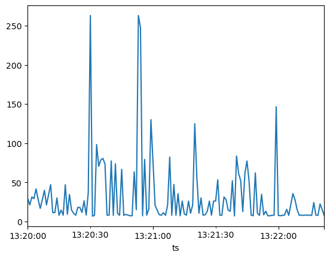
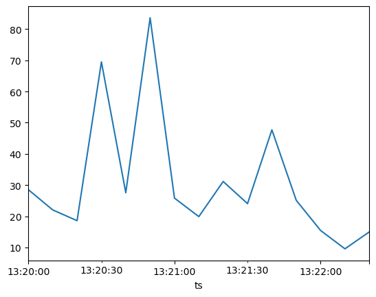

NumPy
Библеотека NumPy предоставляет следующие возможности:
- работать с многомерными массивами (включая матрицы)
- производить быстрое вычисление математических функций на многомерных массивах
Ядром пакета NumPy является объект ndarray
Важные отличия между NumPy arrays и Python sequences:
- NumPy array имеет фиксированную длину, которая определяется в момент его создания (в отличие от Python lists, которые могут расти динамически)
- Элементы в NumPy array должны быть одного типа
- Можно выполнять операции непосредственно над NumPy arrays
Сильные стороны NumPy:
- Vectorization
- Broadcasting
Мотивирующий пример

import numpy as np
Способы создания Numpy arrays
- Конвертация из Python structures
- Генерация с помощью встроенных функций
- Чтение с диска
Конвертация из Python structures
np.array([1, 2, 3, 4, 5])
array([1, 2, 3, 4, 5])
При конвертации можно задавать тип данных с помощью аргумента dtype:
np.array([1, 2, 3, 4, 5], dtype=np.float32)
array([1., 2., 3., 4., 5.], dtype=float32)
Аналогичное преобразование:
np.float32([1, 2, 3, 4, 5])
array([1., 2., 3., 4., 5.], dtype=float32)
Генерация Numpy arrays
- arange — аналог range из Python, которому можно передать нецелочисленный шаг
- linspace — способ равномерно разбить отрезок на n-1 интервал
- logspace — способ разбить отрезок по логарифмической шкале
- zeros — создаёт массив заполненный нулями заданной размерности
- ones — создаёт массив заполненный единицами заданной размерности
- empty — создаёт массив неинициализированный никаким значением заданной размерности
np.arange(0, 5, 0.5)
array([0. , 0.5, 1. , 1.5, 2. , 2.5, 3. , 3.5, 4. , 4.5])
np.linspace(0, 5, 11)
array([0. , 0.5, 1. , 1.5, 2. , 2.5, 3. , 3.5, 4. , 4.5, 5. ])
np.logspace(0, 9, 10, base=2)
array([ 1., 2., 4., 8., 16., 32., 64., 128., 256., 512.])
np.zeros((2, 2))
array([[0., 0.],
[0., 0.]])
np.ones((2, 2))
array([[1., 1.],
[1., 1.]])
np.empty((2, 2))
array([[1., 1.],
[1., 1.]])
np.diag([1,2,3])
array([[1, 0, 0],
[0, 2, 0],
[0, 0, 3]])
Pазмеры массива храниться в поле shape, а количество размерностей - в ndim
array = np.ones((2, 3,))
print('Размерность массива - %s, количество размерностей - %d'%(array.shape, array.ndim))
array
Размерность массива - (2, 3), количество размерностей - 2
array([[1., 1., 1.],
[1., 1., 1.]])
## Чему равень ndim и shape в следующих случаях
print(np.diag([1,2,3]).shape, np.diag([1,2,3]).ndim)
print(np.zeros((5, 5, 5)).shape, np.zeros((5, 5, 5)).ndim)
(3, 3) 2
(5, 5, 5) 3
Метод reshape позволяет преобразовать размеры массива без изменения данных
array = np.arange(0, 6, 0.5)
array = array.reshape((2, 6))
array
array([[0. , 0.5, 1. , 1.5, 2. , 2.5],
[3. , 3.5, 4. , 4.5, 5. , 5.5]])
Для того что бы развернуть многомерный массив в вектор, можно воспользоваться функцией ravel
array = np.ravel(array)
array
array([0. , 0.5, 1. , 1.5, 2. , 2.5, 3. , 3.5, 4. , 4.5, 5. , 5.5])
# Какие будут массивы?
print(np.ravel(np.diag([1,2])))
print(np.reshape(np.diag([1,2]), [1, 4]))
[1 0 0 2]
[[1 0 0 2]]
Индексация
В NumPy работает привычная индексация Python, включая использование отрицательных индексов и срезов
print(array[0])
print(array[-1])
print(array[1:-1])
print(array[1:-1:2])
print(array[::-1])
0.0
5.5
[0.5 1. 1.5 2. 2.5 3. 3.5 4. 4.5 5. ]
[0.5 1.5 2.5 3.5 4.5]
[5.5 5. 4.5 4. 3.5 3. 2.5 2. 1.5 1. 0.5 0. ]
print(array.shape)
(12,)
print(array[None,0:, None].ndim, array[None,0:, None].shape)
array[None,0:, None]
3 (1, 12, 1)
array([[[0. ],
[0.5],
[1. ],
[1.5],
[2. ],
[2.5],
[3. ],
[3.5],
[4. ],
[4.5],
[5. ],
[5.5]]])
Замечание: Индексы и срезы в многомерных массивах не нужно разделять квадратными скобками
т.е. вместо matrix[i][j] нужно использовать matrix[i, j]
В качестве индексов можно использовать массивы:
array[[0, 2, 4, 6, 8, 10]]
array([0., 1., 2., 3., 4., 5.])
array[[True, False, True, False, True, False, True, False, True, False, True, False]]
array([0., 1., 2., 3., 4., 5.])
# Что будет выведено?
x = np.array([[1, 2, 3]])
y = np.array([1, 2, 3])
print (x.shape, y.shape)
print(np.array_equal(x, y))
print(np.array_equal(x, y[None, :]))
(1, 3) (3,)
False
True
x = np.arange(10)
x
array([0, 1, 2, 3, 4, 5, 6, 7, 8, 9])
x[(x % 2 == 0) & (x > 5)]
array([6, 8])
print(x)
y = x[x>5]
y *= 2
print(y)
print(x)
[0 1 2 3 4 5 6 7 8 9]
[12 14 16 18]
[0 1 2 3 4 5 6 7 8 9]
Для копирования в numpy есть метод copy
x.copy()
array([0, 1, 2, 3, 4, 5, 6, 7, 8, 9])
Чтение данных с помощью функции genfromtxt
with open('out.npz', 'wb') as f:
np.save(f, x)
with open('out.npz', 'rb') as f:
print(f.read())
with open('out.npz', 'rb') as f:
y = np.load(f)
print(y)
b"\x93NUMPY\x01\x00v\x00{'descr': '<i8', 'fortran_order': False, 'shape': (10,), } \n\x00\x00\x00\x00\x00\x00\x00\x00\x01\x00\x00\x00\x00\x00\x00\x00\x02\x00\x00\x00\x00\x00\x00\x00\x03\x00\x00\x00\x00\x00\x00\x00\x04\x00\x00\x00\x00\x00\x00\x00\x05\x00\x00\x00\x00\x00\x00\x00\x06\x00\x00\x00\x00\x00\x00\x00\x07\x00\x00\x00\x00\x00\x00\x00\x08\x00\x00\x00\x00\x00\x00\x00\t\x00\x00\x00\x00\x00\x00\x00"
[0 1 2 3 4 5 6 7 8 9]
iris = np.genfromtxt('iris_subset.txt', delimiter=', ', names=True, dtype=[('sepal_length_in_cm', 'f8'),
('sepal_width_in_cm', 'f8'),
('petal_length_in_cm', 'f8'),
('petal_width_in_cm', 'f8'),
('class', 'U10')])
iris
array([(1.000e+00, 1. , 10., 121. , 'setosa'),
(1.000e+00, 314. , 13., 121. , 'versicolor'),
(1.134e+03, 1. , 103., 1421. , 'setosa'),
(1.000e+00, 141. , 10., 121. , 'versicolor'),
(1.440e+02, 1. , 4582., 13481. , 'versicolor'),
(1.000e+00, 13.3, 10., 121. , 'versicolor'),
(1.141e+03, 1. , 1341., 1231.1, 'setosa'),
(7.320e+02, 131. , 139., 92.1, 'setosa')],
dtype=[('sepal_length_in_cm', '<f8'), ('sepal_width_in_cm', '<f8'), ('petal_length_in_cm', '<f8'), ('petal_width_in_cm', '<f8'), ('class', '<U10')])
Значения строки можно запросить по индексу, а значения колонки по её названию
print('Описание первого элемента: %s'%iris[0])
print('Значения столбца sepal_length_in_cm: %s'%iris['sepal_length_in_cm'])
Описание первого элемента: (1., 1., 10., 121., 'setosa')
Значения столбца sepal_length_in_cm: [1.000e+00 1.000e+00 1.134e+03 1.000e+00 1.440e+02 1.000e+00 1.141e+03
7.320e+02]
sepal_length_setosa = iris['sepal_length_in_cm'][iris['class'] == 'setosa']
sepal_length_versicolor = iris['sepal_length_in_cm'][iris['class'] == 'versicolor']
print('Значения слтобца sepal_length_in_cm\n\tclass setosa: %s\n\tclass versicolor: %s'%(sepal_length_setosa,
sepal_length_versicolor))
Значения слтобца sepal_length_in_cm
class setosa: [1.000e+00 1.134e+03 1.141e+03 7.320e+02]
class versicolor: [ 1. 1. 144. 1.]
При чтение данных из файла можно пропускать строки в конце и в начале, используя skip_header и skip_footer, а также брать только нужные столбцы - usecols
iris_class = np.genfromtxt('iris_subset.txt', delimiter=', ', skip_header=1, usecols=4, dtype='U10')
iris_class
array(['setosa', 'versicolor', 'setosa', 'versicolor', 'versicolor',
'versicolor', 'setosa', 'setosa'], dtype='<U10')
iris_features = np.genfromtxt('iris_subset.txt', delimiter=', ', skip_header=1, usecols=range(4))
iris_features
array([[1.0000e+00, 1.0000e+00, 1.0000e+01, 1.2100e+02],
[1.0000e+00, 3.1400e+02, 1.3000e+01, 1.2100e+02],
[1.1340e+03, 1.0000e+00, 1.0300e+02, 1.4210e+03],
[1.0000e+00, 1.4100e+02, 1.0000e+01, 1.2100e+02],
[1.4400e+02, 1.0000e+00, 4.5820e+03, 1.3481e+04],
[1.0000e+00, 1.3300e+01, 1.0000e+01, 1.2100e+02],
[1.1410e+03, 1.0000e+00, 1.3410e+03, 1.2311e+03],
[7.3200e+02, 1.3100e+02, 1.3900e+02, 9.2100e+01]])
features_setosa = iris_features[iris_class == 'setosa']
features_versicolor = iris_features[iris_class == 'versicolor']
Операции в NumPy можно производить непосредственно над векторами одинаковой размерности без использования циклов
Например, вычисление поэлементной разности между векторами выглядит следующим образом:
sepal_length_versicolor - sepal_length_setosa
array([ 0., -1133., -997., -731.])
Аналогчино для многомерных массивов
features_versicolor - features_setosa
array([[ 0.00000e+00, 3.13000e+02, 3.00000e+00, 0.00000e+00],
[-1.13300e+03, 1.40000e+02, -9.30000e+01, -1.30000e+03],
[-9.97000e+02, 0.00000e+00, 3.24100e+03, 1.22499e+04],
[-7.31000e+02, -1.17700e+02, -1.29000e+02, 2.89000e+01]])
Broadcasting
Broadcasting снимает правило одной размерности и позволяет производить арифметические операции над массивами разных, но всё-таки созгласованных размерностей. Простейшим примером является умножение вектора на число:

2*np.arange(1, 4)
array([2, 4, 6])
Правило согласования размерностей выражается в одном предложение:
In order to broadcast, the size of the trailing axes for both arrays in an operation must either be the same size or one of them must be one
Если количество размерностей не совпадают, то к массиву меньшей размерности добавляются фиктивные размерности "слева", например:
a = np.ones((2,3,4))
b = np.ones(4)
c = a * b # here a.shape=(2,3,4) and b.shape is considered to be (1,1,4)
Прибавим к каждой строчки матрицы один и тот же вектор:

np.array([[0, 0, 0], [10, 10, 10], [20, 20, 20], [30, 30, 30]]) + np.arange(3)
array([[ 0, 1, 2],
[10, 11, 12],
[20, 21, 22],
[30, 31, 32]])
Теперь если мы хотим, проделать тот же трюк но со столбцами, то мы не можем просто добавить вектор состоящий из 4 элементов т.к. в данном случае размеры будут не согласованы

Сначала нужно преоброзовать вектор к виду:
np.arange(4)[:, np.newaxis]
array([[0],
[1],
[2],
[3]])
А затем к нему добавить матрицу:
np.arange(4)[:, np.newaxis]+np.array([[0, 0, 0], [10, 10, 10], [20, 20, 20], [30, 30, 30]])
array([[ 0, 0, 0],
[11, 11, 11],
[22, 22, 22],
[33, 33, 33]])
Так же в NumPy реализованно много полезных операций для работы с массивами: np.min, np.max, np.sum, np.mean и т.д.
print('Среднее значение всех значений класса versicolor: %s'%np.mean(features_versicolor))
print('Среднее значение каждого признака класса versicolor: %s'%np.mean(features_versicolor, axis=1))
Среднее значение всех значений класса versicolor: 1192.20625
Среднее значение каждого признака класса versicolor: [ 112.25 68.25 4552. 36.325]
Теперь эффективно посчитаем $\frac{1}{n} \sum\limits_{i=1}^n |x_i-y_i|$ для каждой пары $(x, y)$, где $x$ - вектор признаков объекта из класса setosa, а $y$ - вектор признаков объекта из класса versicolor
np.mean(np.abs(features_setosa - features_versicolor[:, np.newaxis]), axis=2)
array([[7.900000e+01, 7.090000e+02, 9.727750e+02, 2.672250e+02],
[3.500000e+01, 6.665000e+02, 9.302750e+02, 2.247250e+02],
[4.518750e+03, 4.382250e+03, 4.121975e+03, 4.637475e+03],
[3.075000e+00, 6.345750e+02, 8.983500e+02, 2.516500e+02]])
Операции
x = np.arange(40).reshape(5, 2, 4)
print(x)
[[[ 0 1 2 3]
[ 4 5 6 7]]
[[ 8 9 10 11]
[12 13 14 15]]
[[16 17 18 19]
[20 21 22 23]]
[[24 25 26 27]
[28 29 30 31]]
[[32 33 34 35]
[36 37 38 39]]]
print(x.mean())
print(np.mean(x))
19.5
19.5
x.mean(axis=0)
array([[16., 17., 18., 19.],
[20., 21., 22., 23.]])
x.mean(axis=1)
array([[ 2., 3., 4., 5.],
[10., 11., 12., 13.],
[18., 19., 20., 21.],
[26., 27., 28., 29.],
[34., 35., 36., 37.]])
x.mean(axis=2)
array([[ 1.5, 5.5],
[ 9.5, 13.5],
[17.5, 21.5],
[25.5, 29.5],
[33.5, 37.5]])
x.mean(axis=(0,2))
array([17.5, 21.5])
x.mean(axis=(0,1,2))
19.5
Конкатенация многомерных массивов
Конкатенировать несколько массивом можно с помощью функций np.concatenate, np.hstack, np.vstack, np.dstack
x = np.arange(10).reshape(5, 2)
y = np.arange(100, 120).reshape(5, 4)
x
array([[0, 1],
[2, 3],
[4, 5],
[6, 7],
[8, 9]])
y
array([[100, 101, 102, 103],
[104, 105, 106, 107],
[108, 109, 110, 111],
[112, 113, 114, 115],
[116, 117, 118, 119]])
np.hstack((x, y))
array([[ 0, 1, 100, 101, 102, 103],
[ 2, 3, 104, 105, 106, 107],
[ 4, 5, 108, 109, 110, 111],
[ 6, 7, 112, 113, 114, 115],
[ 8, 9, 116, 117, 118, 119]])
x = np.ones([2, 3])
y = np.zeros([2, 2])
# Какой будет результат
print(np.hstack((x,y)).shape)
print(np.vstack((x,y)).shape)
(2, 5)
---------------------------------------------------------------------------
ValueError Traceback (most recent call last)
Cell In[54], line 3
1 # Какой будет результат
2 print(np.hstack((x,y)).shape)
----> 3 print(np.vstack((x,y)).shape)
File /opt/anaconda3/lib/python3.12/site-packages/numpy/core/shape_base.py:289, in vstack(tup, dtype, casting)
287 if not isinstance(arrs, list):
288 arrs = [arrs]
--> 289 return _nx.concatenate(arrs, 0, dtype=dtype, casting=casting)
ValueError: all the input array dimensions except for the concatenation axis must match exactly, but along dimension 1, the array at index 0 has size 3 and the array at index 1 has size 2
p = np.arange(1).reshape([1, 1, 1, 1])
p
array([[[[0]]]])
print("vstack: ", np.vstack((p, p)).shape)
print("hstack: ", np.hstack((p, p)).shape)
print("dstack: ", np.dstack((p, p)).shape)
print("concatenate: ", np.concatenate((p, p), axis=3).shape)
vstack: (2, 1, 1, 1)
hstack: (1, 2, 1, 1)
dstack: (1, 1, 2, 1)
concatenate: (1, 1, 1, 2)
Типы
x = [1, 2, 70000]
np.array(x, dtype=np.float32)
array([1.e+00, 2.e+00, 7.e+04], dtype=float32)
np.array(x, dtype=np.uint16)
/tmp/ipykernel_984447/2771282312.py:1: DeprecationWarning: NumPy will stop allowing conversion of out-of-bound Python integers to integer arrays. The conversion of 70000 to uint16 will fail in the future.
For the old behavior, usually:
np.array(value).astype(dtype)
will give the desired result (the cast overflows).
np.array(x, dtype=np.uint16)
array([ 1, 2, 4464], dtype=uint16)
np.array(x, dtype=np.unicode_)
array(['1', '2', '70000'], dtype='<U5')
Функциональное программирование
def f(value):
return np.sqrt(value)
print(np.apply_along_axis(f, 0, np.arange(10)))
[0. 1. 1.41421356 1.73205081 2. 2.23606798
2.44948974 2.64575131 2.82842712 3. ]
vf = np.vectorize(f)
%%timeit
vf(np.arange(100000))
146 ms ± 2.4 ms per loop (mean ± std. dev. of 7 runs, 10 loops each)
%%timeit
np.apply_along_axis(f, 0, np.arange(100000))
1.89 ms ± 31.9 μs per loop (mean ± std. dev. of 7 runs, 1,000 loops each)
%%timeit
np.array([f(v) for v in np.arange(100000)])
129 ms ± 861 μs per loop (mean ± std. dev. of 7 runs, 10 loops each)
Pandas
Подключаем библиотеку Pandas, предназначенную для считывания, предобработки и быстрой визуализации данных, а также для простой аналитики.
import pandas as pd
df = pd.read_csv("titanic.csv", sep='\t')
df.head(3)
| PassengerId | Survived | Pclass | Name | Sex | Age | SibSp | Parch | Ticket | Fare | Cabin | Embarked | |
|---|---|---|---|---|---|---|---|---|---|---|---|---|
| 0 | 1 | 0 | 3 | Braund, Mr. Owen Harris | male | 22.0 | 1 | 0 | A/5 21171 | 7.2500 | NaN | S |
| 1 | 2 | 1 | 1 | Cumings, Mrs. John Bradley (Florence Briggs Th... | female | 38.0 | 1 | 0 | PC 17599 | 71.2833 | C85 | C |
| 2 | 3 | 1 | 3 | Heikkinen, Miss. Laina | female | 26.0 | 0 | 0 | STON/O2. 3101282 | 7.9250 | NaN | S |
view = df[df['Sex'] == 'female']
list(((df['Sex'] == 'female') & (df['Age'] > 30)).index)
[0,
1,
2,
3,
4,
5,
6,
7,
8,
9,
10,
11,
12,
13,
14,
15,
16,
17,
18,
19,
20,
21,
22,
23,
24,
25,
26,
27,
28,
29,
30,
31,
32,
33,
34,
35,
36,
37,
38,
39,
40,
41,
42,
43,
44,
45,
46,
47,
48,
49,
50,
51,
52,
53,
54,
55,
56,
57,
58,
59,
60,
61,
62,
63,
64,
65,
66,
67,
68,
69,
70,
71,
72,
73,
74,
75,
76,
77,
78,
79,
80,
81,
82,
83,
84,
85,
86,
87,
88,
89,
90,
91,
92,
93,
94,
95,
96,
97,
98,
99,
100,
101,
102,
103,
104,
105,
106,
107,
108,
109,
110,
111,
112,
113,
114,
115,
116,
117,
118,
119,
120,
121,
122,
123,
124,
125,
126,
127,
128,
129,
130,
131,
132,
133,
134,
135,
136,
137,
138,
139,
140,
141,
142,
143,
144,
145,
146,
147,
148,
149,
150,
151,
152,
153,
154,
155]
df[(df['Sex'] == 'female') & (df['Age'] > 30)].index
Index([1, 3, 11, 15, 18, 25, 40, 52, 61, 85, 98, 123, 132], dtype='int64')
df.drop(index=(df[(df['Sex'] == 'female') & (df['Age'] > 30)].index),axis=1, inplace=True)
df.loc[78]
PassengerId 79
Survived 1
Pclass 2
Name Caldwell, Master. Alden Gates
Sex male
Age 0.83
SibSp 0
Parch 2
Ticket 248738
Fare 29.0
Cabin NaN
Embarked S
Name: 78, dtype: object
df.iloc[0]
PassengerId 1
Survived 0
Pclass 3
Name Braund, Mr. Owen Harris
Sex male
Age 22.0
SibSp 1
Parch 0
Ticket A/5 21171
Fare 7.25
Cabin NaN
Embarked S
Name: 0, dtype: object
df.describe()
| PassengerId | Survived | Pclass | Age | SibSp | Parch | Fare | |
|---|---|---|---|---|---|---|---|
| count | 143.000000 | 143.000000 | 143.000000 | 113.000000 | 143.000000 | 143.000000 | 143.000000 |
| mean | 80.902098 | 0.307692 | 2.461538 | 26.702035 | 0.601399 | 0.391608 | 27.526018 |
| std | 44.536473 | 0.463161 | 0.776134 | 14.483237 | 1.075593 | 0.813919 | 40.406013 |
| min | 1.000000 | 0.000000 | 1.000000 | 0.830000 | 0.000000 | 0.000000 | 6.750000 |
| 25% | 43.500000 | 0.000000 | 2.000000 | 19.000000 | 0.000000 | 0.000000 | 7.925000 |
| 50% | 81.000000 | 0.000000 | 3.000000 | 24.000000 | 0.000000 | 0.000000 | 13.000000 |
| 75% | 118.500000 | 1.000000 | 3.000000 | 33.000000 | 1.000000 | 0.000000 | 29.597900 |
| max | 156.000000 | 1.000000 | 3.000000 | 71.000000 | 5.000000 | 5.000000 | 263.000000 |
df[["Sex", "Cabin"]].describe()
| Sex | Cabin | |
|---|---|---|
| count | 143 | 25 |
| unique | 2 | 23 |
| top | male | C23 C25 C27 |
| freq | 100 | 2 |
Срезы в DataFrame
Индексация
df.sort_values("Age", inplace=True)
df.head(3)
| PassengerId | Survived | Pclass | Name | Sex | Age | SibSp | Parch | Ticket | Fare | Cabin | Embarked | |
|---|---|---|---|---|---|---|---|---|---|---|---|---|
| 78 | 79 | 1 | 2 | Caldwell, Master. Alden Gates | male | 0.83 | 0 | 2 | 248738 | 29.000 | NaN | S |
| 7 | 8 | 0 | 3 | Palsson, Master. Gosta Leonard | male | 2.00 | 3 | 1 | 349909 | 21.075 | NaN | S |
| 119 | 120 | 0 | 3 | Andersson, Miss. Ellis Anna Maria | female | 2.00 | 4 | 2 | 347082 | 31.275 | NaN | S |
df.iloc[78]
PassengerId 67
Survived 1
Pclass 2
Name Nye, Mrs. (Elizabeth Ramell)
Sex female
Age 29.0
SibSp 0
Parch 0
Ticket C.A. 29395
Fare 10.5
Cabin F33
Embarked S
Name: 66, dtype: object
df.loc[78]
PassengerId 79
Survived 1
Pclass 2
Name Caldwell, Master. Alden Gates
Sex male
Age 0.83
SibSp 0
Parch 2
Ticket 248738
Fare 29.0
Cabin NaN
Embarked S
Name: 78, dtype: object
df.loc[[78, 79, 100], ["Age", "Cabin"]]
| Age | Cabin | |
|---|---|---|
| 78 | 0.83 | NaN |
| 79 | 30.00 | NaN |
| 100 | 28.00 | NaN |
Если хотите модифицировать данные среза, не меняя основной таблицы, нужно сделать копию.
df_slice_copy = df.loc[[78, 79, 100], ["Age", "Cabin"]].copy()
df_slice_copy[:] = 3
df_slice_copy
| Age | Cabin | |
|---|---|---|
| 78 | 3.0 | 3 |
| 79 | 3.0 | 3 |
| 100 | 3.0 | 3 |
Если хотите менять основную таблицу, то используйте loc
df.head(3)
| PassengerId | Survived | Pclass | Name | Sex | Age | SibSp | Parch | Ticket | Fare | Cabin | Embarked | |
|---|---|---|---|---|---|---|---|---|---|---|---|---|
| 78 | 79 | 1 | 2 | Caldwell, Master. Alden Gates | male | 0.83 | 0 | 2 | 248738 | 29.000 | NaN | S |
| 7 | 8 | 0 | 3 | Palsson, Master. Gosta Leonard | male | 2.00 | 3 | 1 | 349909 | 21.075 | NaN | S |
| 119 | 120 | 0 | 3 | Andersson, Miss. Ellis Anna Maria | female | 2.00 | 4 | 2 | 347082 | 31.275 | NaN | S |
some_slice = df["Age"].isin([20, 25,30])
df.loc[some_slice, "Fare"] = df.loc[some_slice, "Fare"] * 10
Так лучше не делать:
slice_df = df[some_slice]
slice_df["Fare"] = slice_df["Fare"] * 10
/tmp/ipykernel_984447/1355601167.py:2: SettingWithCopyWarning:
A value is trying to be set on a copy of a slice from a DataFrame.
Try using .loc[row_indexer,col_indexer] = value instead
See the caveats in the documentation: https://pandas.pydata.org/pandas-docs/stable/user_guide/indexing.html#returning-a-view-versus-a-copy
slice_df["Fare"] = slice_df["Fare"] * 10
Получить значения только нужных столбцов можно передав в [] название столбца (или список названий столбцов).
Замечание: Если передаём название одного столбца, то получаем объект класса pandas.Series, а если список названий столбцов, то получаем pandas.DataFrame, чтобы получить numpy.array обратитесь к полю values.
Series и DataFrame имеют много общих методов
df["Age"].head(5)
78 0.83
7 2.00
119 2.00
16 2.00
43 3.00
Name: Age, dtype: float64
df[["Age"]].head(5)
| Age | |
|---|---|
| 78 | 0.83 |
| 7 | 2.00 |
| 119 | 2.00 |
| 16 | 2.00 |
| 43 | 3.00 |
pd.Series
Одномерные срезы датафреймов имеют тип pd.Series.
Можно получить np.array из pd.Series, но вы не хотите этого делать.
df["Age"].head(5).values
array([0.83, 2. , 2. , 2. , 3. ])
Можно достать и индекс
df["Age"].head(5).index
Index([78, 7, 119, 16, 43], dtype='int64')
Создаются они примерно также, как np.array. Опционально указывается индекс
pd.Series([1, 2, 3], index=["Red", "Green", "Blue"])
Red 1
Green 2
Blue 3
dtype: int64
pd.Series(1, index=["Red", "Green", "Blue"])
Red 1
Green 1
Blue 1
dtype: int64
pd.Series([1, 2, 3], index=["Red", "Green", "Blue"])
Red 1
Green 2
Blue 3
dtype: int64
Series можно перевести в DataFrame
s = pd.Series([1, 2, 3], index=["Red", "Green", "Blue"])
s.to_frame("Values")
| Values | |
|---|---|
| Red | 1 |
| Green | 2 |
| Blue | 3 |
s.loc["Red"]
1
s.iloc[0]
1
Объединение таблиц
df1 = df[["Age", "Parch"]].copy()
df2 = df[["Ticket", "Fare"]].copy()
df1.join(df2).head(5)
| Age | Parch | Ticket | Fare | |
|---|---|---|---|---|
| 78 | 0.83 | 2 | 248738 | 29.0000 |
| 7 | 2.00 | 1 | 349909 | 21.0750 |
| 119 | 2.00 | 2 | 347082 | 31.2750 |
| 16 | 2.00 | 1 | 382652 | 29.1250 |
| 43 | 3.00 | 2 | SC/Paris 2123 | 41.5792 |
df1 = df[["Age", "Parch", "PassengerId"]].copy()
df2 = df[["Ticket", "Fare", "PassengerId"]].copy()
pd.merge(df1, df2, on=["PassengerId"]).head(5)
| Age | Parch | PassengerId | Ticket | Fare | |
|---|---|---|---|---|---|
| 0 | 0.83 | 2 | 79 | 248738 | 29.0000 |
| 1 | 2.00 | 1 | 8 | 349909 | 21.0750 |
| 2 | 2.00 | 2 | 120 | 347082 | 31.2750 |
| 3 | 2.00 | 1 | 17 | 382652 | 29.1250 |
| 4 | 3.00 | 2 | 44 | SC/Paris 2123 | 41.5792 |
pd.merge(df1, df2, on=["PassengerId"], how="inner").head(5)
| Age | Parch | PassengerId | Ticket | Fare | |
|---|---|---|---|---|---|
| 0 | 0.83 | 2 | 79 | 248738 | 29.0000 |
| 1 | 2.00 | 1 | 8 | 349909 | 21.0750 |
| 2 | 2.00 | 2 | 120 | 347082 | 31.2750 |
| 3 | 2.00 | 1 | 17 | 382652 | 29.1250 |
| 4 | 3.00 | 2 | 44 | SC/Paris 2123 | 41.5792 |
Группировка
print("Pclass 1: ", df[df["Pclass"] == 1]["Age"].mean())
print("Pclass 2: ", df[df["Pclass"] == 2]["Age"].mean())
print("Pclass 3: ", df[df["Pclass"] == 3]["Age"].mean())
Pclass 1: 36.86363636363637
Pclass 2: 26.68576923076923
Pclass 3: 23.26923076923077
df.groupby(["Pclass"])[["Age"]].mean()
| Age | |
|---|---|
| Pclass | |
| 1 | 36.863636 |
| 2 | 26.685769 |
| 3 | 23.269231 |
df.groupby(["Survived", "Pclass"])
<pandas.core.groupby.generic.DataFrameGroupBy object at 0x73b08903f7d0>
df.groupby(["Survived", "Pclass"])["PassengerId"].count()
Survived Pclass
0 1 18
2 16
3 65
1 1 7
2 11
3 26
Name: PassengerId, dtype: int64
df.groupby(["Survived", "Pclass"])[["PassengerId", "Cabin"]].count()
| PassengerId | Cabin | ||
|---|---|---|---|
| Survived | Pclass | ||
| 0 | 1 | 18 | 12 |
| 2 | 16 | 1 | |
| 3 | 65 | 1 | |
| 1 | 1 | 7 | 7 |
| 2 | 11 | 2 | |
| 3 | 26 | 2 |
df.groupby(["Survived", "Pclass"])[["PassengerId", "Fare"]].describe()
| PassengerId | Fare | ||||||||||||||||
|---|---|---|---|---|---|---|---|---|---|---|---|---|---|---|---|---|---|
| count | mean | std | min | 25% | 50% | 75% | max | count | mean | std | min | 25% | 50% | 75% | max | ||
| Survived | Pclass | ||||||||||||||||
| 0 | 1 | 18.0 | 82.555556 | 44.501450 | 7.0 | 40.75 | 88.5 | 117.00 | 156.0 | 18.0 | 80.035183 | 66.109719 | 27.7208 | 51.896875 | 61.2771 | 78.721875 | 263.0000 |
| 2 | 16.0 | 107.187500 | 44.842270 | 21.0 | 72.50 | 122.0 | 145.25 | 151.0 | 16.0 | 33.555725 | 32.412477 | 10.5000 | 12.881250 | 23.5000 | 31.740600 | 130.0000 | |
| 3 | 65.0 | 80.892308 | 42.930585 | 1.0 | 49.00 | 87.0 | 114.00 | 155.0 | 65.0 | 19.123272 | 20.710190 | 6.7500 | 7.895800 | 8.0500 | 21.075000 | 98.2500 | |
| 1 | 1 | 7.0 | 84.000000 | 49.568135 | 24.0 | 44.00 | 89.0 | 117.50 | 152.0 | 7.0 | 90.966057 | 85.998766 | 26.2833 | 35.500000 | 63.3583 | 106.560400 | 263.0000 |
| 2 | 11.0 | 57.181818 | 35.261362 | 10.0 | 33.00 | 57.0 | 73.00 | 134.0 | 11.0 | 21.627273 | 10.581905 | 10.5000 | 11.750000 | 26.0000 | 28.375000 | 41.5792 | |
| 3 | 26.0 | 72.807692 | 46.318048 | 3.0 | 34.00 | 72.0 | 109.50 | 147.0 | 26.0 | 16.698400 | 24.254889 | 7.1417 | 7.756250 | 7.9250 | 14.244775 | 124.7500 | |
Работа с timestamp'ами
tdf = df.copy()
tdf["ts"] = range(1560000000, 1560000000 + tdf.shape[0])
tdf.head(2)
| PassengerId | Survived | Pclass | Name | Sex | Age | SibSp | Parch | Ticket | Fare | Cabin | Embarked | ts | |
|---|---|---|---|---|---|---|---|---|---|---|---|---|---|
| 78 | 79 | 1 | 2 | Caldwell, Master. Alden Gates | male | 0.83 | 0 | 2 | 248738 | 29.000 | NaN | S | 1560000000 |
| 7 | 8 | 0 | 3 | Palsson, Master. Gosta Leonard | male | 2.00 | 3 | 1 | 349909 | 21.075 | NaN | S | 1560000001 |
tdf["ts"] = pd.to_datetime(tdf["ts"], unit="s")
tdf.head(2)
| PassengerId | Survived | Pclass | Name | Sex | Age | SibSp | Parch | Ticket | Fare | Cabin | Embarked | ts | |
|---|---|---|---|---|---|---|---|---|---|---|---|---|---|
| 78 | 79 | 1 | 2 | Caldwell, Master. Alden Gates | male | 0.83 | 0 | 2 | 248738 | 29.000 | NaN | S | 2019-06-08 13:20:00 |
| 7 | 8 | 0 | 3 | Palsson, Master. Gosta Leonard | male | 2.00 | 3 | 1 | 349909 | 21.075 | NaN | S | 2019-06-08 13:20:01 |
tdf.set_index("ts", inplace=True)
tdf.resample("15s").sum()[["PassengerId", "Survived", "Pclass", "Sex"]]
| PassengerId | Survived | Pclass | Sex | |
|---|---|---|---|---|
| ts | ||||
| 2019-06-08 13:20:00 | 862 | 7 | 41 | malemalefemalemalefemalemalefemalefemalemalefe... |
| 2019-06-08 13:20:15 | 1302 | 4 | 40 | femalefemalefemalefemalemalemalefemalefemalefe... |
| 2019-06-08 13:20:30 | 1235 | 3 | 38 | malemalefemalefemalemalemalemalemalemalemalema... |
| 2019-06-08 13:20:45 | 1628 | 6 | 33 | femalefemalemalemalemalemalemalemalefemalemale... |
| 2019-06-08 13:21:00 | 1057 | 5 | 37 | malemalemalemalefemalefemalemalefemalemalemale... |
| 2019-06-08 13:21:15 | 1144 | 6 | 37 | malemalefemalefemalemalefemalemalemalemalemale... |
| 2019-06-08 13:21:30 | 1590 | 0 | 28 | malemalemalemalemalemalemalemalemalemalemalema... |
| 2019-06-08 13:21:45 | 845 | 4 | 33 | malemalemalemalemalemalemalemalemalemalefemale... |
| 2019-06-08 13:22:00 | 912 | 6 | 41 | femalemalemalemalemalefemalemalemalemalemalema... |
| 2019-06-08 13:22:15 | 994 | 3 | 24 | malemalefemalemalemalefemalefemalemale |
Rolling функции

tdf.sort_index(inplace=True)
tdf[["Fare"]].rolling(window=5).mean().head(10)
| Fare | |
|---|---|
| ts | |
| 2019-06-08 13:20:00 | NaN |
| 2019-06-08 13:20:01 | NaN |
| 2019-06-08 13:20:02 | NaN |
| 2019-06-08 13:20:03 | NaN |
| 2019-06-08 13:20:04 | 30.41084 |
| 2019-06-08 13:20:05 | 30.19084 |
| 2019-06-08 13:20:06 | 29.31584 |
| 2019-06-08 13:20:07 | 28.61084 |
| 2019-06-08 13:20:08 | 30.72334 |
| 2019-06-08 13:20:09 | 26.62250 |
Можно делать вместе с groupby
rol = tdf[["Sex", "Fare"]].groupby(["Sex"]).rolling(window=5).mean()
rol.head(100)
| Fare | ||
|---|---|---|
| Sex | ts | |
| female | 2019-06-08 13:20:02 | NaN |
| 2019-06-08 13:20:04 | NaN | |
| 2019-06-08 13:20:06 | NaN | |
| 2019-06-08 13:20:07 | NaN | |
| 2019-06-08 13:20:09 | 27.67584 | |
| ... | ... | ... |
| male | 2019-06-08 13:21:26 | 14.02416 |
| 2019-06-08 13:21:27 | 17.12416 | |
| 2019-06-08 13:21:28 | 12.72000 | |
| 2019-06-08 13:21:29 | 16.34084 | |
| 2019-06-08 13:21:30 | 19.81000 |
100 rows × 1 columns
rol.loc['male'].head(10)
| Fare | |
|---|---|
| ts | |
| 2019-06-08 13:20:00 | NaN |
| 2019-06-08 13:20:01 | NaN |
| 2019-06-08 13:20:03 | NaN |
| 2019-06-08 13:20:05 | NaN |
| 2019-06-08 13:20:08 | 29.35750 |
| 2019-06-08 13:20:11 | 32.93750 |
| 2019-06-08 13:20:12 | 30.97084 |
| 2019-06-08 13:20:19 | 26.98918 |
| 2019-06-08 13:20:20 | 28.28418 |
| 2019-06-08 13:20:26 | 22.64668 |
Работа со строками
df["Name"].str.lower()\
.str.replace(",", " ")\
.str.split(".").str[1]\
.head(10)
78 alden gates
7 gosta leonard
119 ellis anna maria
16 eugene
43 simonne marie anne andree
63 harald
10 marguerite rut
58 constance mirium
50 juha niilo
24 torborg danira
Name: Name, dtype: object
Работа с NaN'ами
df["Cabin"].head(15)
78 NaN
7 NaN
119 NaN
16 NaN
43 NaN
63 NaN
10 G6
58 NaN
50 NaN
24 NaN
147 NaN
59 NaN
125 NaN
39 NaN
9 NaN
Name: Cabin, dtype: object
df["Cabin"].dropna().head(15)
10 G6
136 D47
27 C23 C25 C27
102 D26
151 C2
97 D10 D12
88 C23 C25 C27
118 B58 B60
139 B86
75 F G73
23 A6
66 F33
21 D56
148 F2
137 C123
Name: Cabin, dtype: object
df["Cabin"].fillna(3).head(5)
78 3
7 3
119 3
16 3
43 3
Name: Cabin, dtype: object
df["Cabin"].fillna(method="bfill").head(15)
/tmp/ipykernel_984447/671977776.py:1: FutureWarning: Series.fillna with 'method' is deprecated and will raise in a future version. Use obj.ffill() or obj.bfill() instead.
df["Cabin"].fillna(method="bfill").head(15)
78 G6
7 G6
119 G6
16 G6
43 G6
63 G6
10 G6
58 D47
50 D47
24 D47
147 D47
59 D47
125 D47
39 D47
9 D47
Name: Cabin, dtype: object
pd.isna(df["Cabin"]).head(10)
78 True
7 True
119 True
16 True
43 True
63 True
10 False
58 True
50 True
24 True
Name: Cabin, dtype: bool
Функция apply
def dummpy_example(row):
return row['Sex'] * row['Pclass']
df['dummy_example'] = df.apply(dummpy_example, axis=1)
df.tail(3)
| PassengerId | Survived | Pclass | Name | Sex | Age | SibSp | Parch | Ticket | Fare | Cabin | Embarked | dummy_example | |
|---|---|---|---|---|---|---|---|---|---|---|---|---|---|
| 128 | 129 | 1 | 3 | Peter, Miss. Anna | female | NaN | 1 | 1 | 2668 | 22.3583 | F E69 | C | femalefemalefemale |
| 140 | 141 | 0 | 3 | Boulos, Mrs. Joseph (Sultana) | female | NaN | 0 | 2 | 2678 | 15.2458 | NaN | C | femalefemalefemale |
| 154 | 155 | 0 | 3 | Olsen, Mr. Ole Martin | male | NaN | 0 | 0 | Fa 265302 | 7.3125 | NaN | S | malemalemale |
Визуализация
tdf["Fare"].plot()
<Axes: xlabel='ts'>

tdf["Fare"].resample("10s").mean().plot()
<Axes: xlabel='ts'>

tdf["Sex"].hist()
<Axes: >